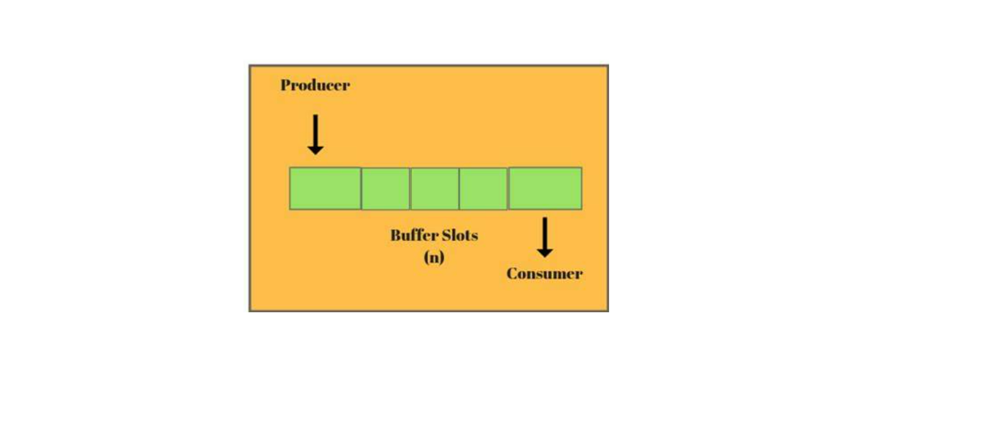
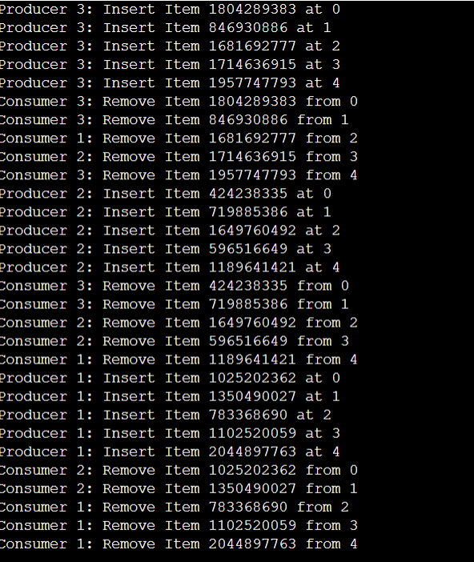
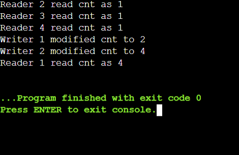
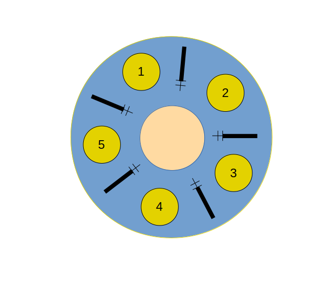
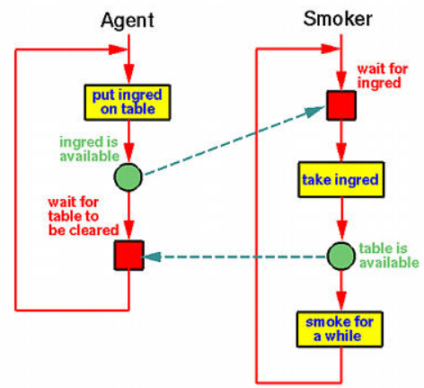

Semaphores
It is used to solve critical section problem and to achieve process synchronization in multiprocessing environment. When one process modifies the semaphore value no other process can simultaneously modify that value. It is an ‘indivisible operation’. This variable is accessed only through 2 operations wait() and signal().
Definition of wait()
Let S be the semaphore variable that is shared between processes.
P(semaphore S)
{
While(S<=0)
; //As long as this condition is true , control is stuck in this loop. The process thus waits
S--; //If S>0, process comes out of loop, S is decremented, enters critical section and users required resource.
}
Definiton of Signal()
V(Semaphore S){
S++; //Incrementing signifies that a process has released the semaphore
}
Types of Semaphores
Semaphores are of 2 types , Binary Semaphores and Counting Semaphores
1. Binary semaphore
The value of semaphore is restricted to 0 and 1. The wait operation only works when the semaphore is 1
and the signal operation succeeds when semaphore is 0.
Also known as mutex locks(mutex for mutual exclusion).
2. Counting Semaphore
These are integer values that have an unrestricted but limited domain. Used when there are multiple
available resources. If the resources are added, semaphore count
is automatically incremented and if the resources are removed,
the count is decremented.
Advantages of Semaphores
- Semaphores allow only one process into the critical section. They follow the mutual exclusion principle strictly and are much more efficient than some other methods of synchronization.
- The implementation / code of the semaphores is written in the machine independent code section of the microkernel, and hence semaphores are machine independent.
Disadvantages of Semaphores
- Requires busy waiting
Wastes CPU cycles that other process might be able to use productively. Also called spinlock because the process spins while waiting for lock. -
Priority inversion
Low priority processes may access the critical section first and high priority processes later
The Producer-Consumer Problem
Producer-Consumer Problem is also known as bounded buffer problem. There are two processes running, i.e. Producer and Consumer, which are currently operated in the buffer. Both Producer and Consumer share a common memory buffer. This buffer is a space of a certain size in the memory of the system which is used for storage. The producer produces the data into the buffer and the consumer consumes the data from the buffer.
Conditions of operation:
- Producer Process should not produce any data when the shared buffer is full.
- Consumer Process should not consume any data when the shared buffer is empty.
- The access to the shared buffer should be mutually exclusive i.e at a time only one process should be able to access the shared buffer and make changes to it.
Note: An inadequate solution could result in a deadlock where both processes are waiting to be awakened.
For solving the producer-consumer problem, three semaphores are used:
- m(mutex) : A binary semaphore which is used to acquire and release the lock.
- empty(): a counting semaphore whose initial value is the number of slots in the buffer, since initially, all slots are empty.
- full: a counting semaphore, whose initial value is 0.
Implementation of producer code
void Producer(){
do{
//wait until empty > 0
wait(Empty);
wait(mutex);
add()
signal(mutex);
signal(Full);
}while(TRUE);
}
- wait(empty): If the producer has to produce/insert something into the buffer, it needs to first check whether there are empty slots in the buffer. If true, the producer inserts data into the buffer and then decrements one empty slot
- wait(mutex): It is a binary semaphore, hence acquires the lock. This is shared among the producer and consumer. Hence, if the producer is acquiring the lock, the consumer cannot make any change in the buffer, until the lock is released. `
- add(): It adds the data to the buffer
- signal(mutex): It simply releases the lock acquired by the producer since the addition of data has been done in the buffer.
- signal(full): This increments the full semaphore since one of the empty slots has now been filled.
Implementation of consumer code
void Consumer() {
while(true){ // consumer consumes an item
wait(Full);
wait(mutex);
consume();
signal(mutex);
signal(Empty);
}
}
- wait(full): If the consumer has to remove data from the buffer, it needs to first check whether the buffer contains some item or not. If true, the consumer removes the data from the buffer and then decrements one full slot.
- wait(mutex): It is a binary semaphore, hence acquires the lock. This is shared among the producer and consumer. Hence, if the consumer is acquiring the lock, the producer cannot make any change in the buffer, until the lock is released.
- consumer(): It removes the data from the buffer.
- signal(mutex): It simply releases the lock acquired by the producer since the addition of data has been done in the buffer.
- signal(empty): This increments the empty semaphore since one of the empty slots have now been emptied.

Readers Writer Problem
The readers-writers problem relates to an object such as a file that is shared between multiple processes. This object needs to be accessed by two types of processes, reader and writer. Any number of readers can read from the shared resource simultaneously, but only one writer can write to the shared resource. When a writer is writing data to the resource, no other process can access the resource. A writer cannot write to the resource if there are non zero number of readers accessing the resource. It is called as reader preference if unlimited number of readers can read simultaneously but only one writer can write at a time(this is the scenario explained below).
Solution
Here, we use one mutex m and a semaphore w. An integer variable read_count is used to maintain the number of readers currently accessing the resource. The variable read_count is initialized to 0. A value of 1 is given initially to m and w.
Three variables are used: mutex, wrt, read_count to implement solution.
- Semaphore mutex, wrt; // semaphore mutex is used to ensure mutual exclusion when read_count is updated i.e. when any reader enters or exit from the critical section and semaphore wrt is used by both readers and writers
- int readcnt; // read_count tells the number of processes performing read in the critical section, initially 0
- wait() decrements value of semaphore
signal() performs as ++. which basically increments value of semaphore
There are two functions
Writer process:
The writer will have to request access for entry in the critical section. It will have to wait until and unless wait() gives a true value. The writer exits the critical section.
Code for writers process looks like this:
while(TRUE) {
wait(w);
/*perform the
write operation */
signal(w);
}
Reader process:
The reader requests access to the critical section. When allowed, it will:
• Increase the number of readers.
• Lock the wrt semaphore, so as to stop any editing.
• Then it will signal the mutex that other readers are allowed while existing readers are reading.
After completion, it exits the critical section and will signal wrt semaphore to allow writers.
Code for readers process looks like this:
while(TRUE) {
wait(m); //acquire lock
read_count++;
if(read_count == 1)
wait(w);
signal(m); //release lock
/* perform the
reading operation */
wait(m); // acquire lock
read_count--;
if(read_count == 0)
signal(w);
signal(m); // release lock
}
C implementation of Readers writers problem

Dining-philosophers problem
The dining philosophers problem is another classic synchronization problem which is used to evaluate situations where there is a need to allocate multiple resources to multiple processes.
Problem Statement
The dining philosophers problem states that there are 5 philosophers sharing a circular table . At any given time, a philosopher will either think or eat. There is a bowl of rice for each of the philosophers and 5 chopsticks. A philosopher needs both their right and left chopstick to eat. A hungry philosopher may only eat if there are both chopsticks available. Otherwise a philosopher puts down their chopstick and begin thinking again.

This problem was structured to tackle the issue of deadlocks which occurs during multiple resource sharing on an operating system.
Solution :
One simple solution is to represent each chopstick with a semaphore. A philosopher tries to grab a chopstick by executing a wait() operation on that semaphore. She releases her chopsticks by executing the signal() operation on the appropriate semaphores. Thus, the shared data are where all the elements of chopstick are initialized to 1.
The structure of philosopher i is shown in Figure
semaphore chopstick[5];
do { wait(chopstick[i]);
wait(chopstick[(i+1) % 5]); ...
/* eat for awhile */ ...
signal(chopstick[i]);
signal(chopstick[(i+1) % 5]);
.. /* think for awhile */ ...
} while (true);
Although this solution guarantees that no two neighbours are eating simultaneously, it nevertheless must be rejected because it could create a deadlock. Suppose that all five philosophers become hungry at the same time and each grabs her left chopstick. All the elements of chopstick will now be equal to 0. When each philosopher tries to grab her right chopstick, she will be delayed forever.
A deadlock-free solution does not necessarily eliminate the possibility of starvation.
Sleeping barber problem
The sleeping barber problem is a classic inter-process communication and synchronization problem between multiple operating system processes. The problem is analogous to that of keeping a barber working when there are customers, resting when there are none, and doing so in an orderly manner.
Problem Statement
The analogy is based upon a hypothetical barber shop with one barber. The barber has one barber's chair in a cutting room and a waiting room containing a number of chairs in it.
1. If there are no customers, the barber falls asleep in the chair.
2. A customer must wake the barber if he is asleep.
3. If a customer arrives while the barber is working, the customer leaves if all chairs are occupied and sits in an empty chair if it's available
4. When the barber finishes a haircut, he inspects the waiting room to see if there are any waiting customers and falls asleep if there are none
There are two main complications. First, there is a risk that a race condition, where the barber sleeps while a customer waits for the barber to get them for a haircut, arises because all of the actions—checking the waiting room, entering the shop, taking a waiting room chair—take a certain amount of time. Specifically, a customer may arrive to find the barber cutting hair so they return to the waiting room to take a seat but while walking back to the waiting room the barber finishes the haircut and goes to the waiting room, which he finds empty (because the customer walks slowly or went to the restroom) and thus goes to sleep in the barber chair. Second, another problem may occur when two customers arrive at the same time when there is only one empty seat in the waiting room and both try to sit in the single chair; only the first person to get to the chair will be able to sit.
Solution :
There are several possible solutions, but all solutions require a mutex, which ensures that only one of the participants can change state at once. The barber must acquire the room status mutex before checking for customers and release it when they begin either to sleep or cut hair; a customer must acquire it before entering the shop and release it once they are sitting in a waiting room or barber chair, and also when they leave the shop because no seats were available. This would take care of both of the problems mentioned above. A number of semaphores is also required to indicate the state of the system. For example, one might store the number of people in the waiting room.
Implementation:
The following pseudocode guarantees synchronization between barber and customer and is deadlock free, but may lead to starvation of a customer. The problem of starvation can be solved with a first-in first-out (FIFO) queue. The semaphore would provide two functions: wait() and signal(), which in terms of C code would correspond to P() and V(), respectively.
Semaphore barberReady = 0
Semaphore accessWRSeats = 1
Semaphore custReady = 0
int numberOfFreeWRSeats = N
def Barber():
while true:
wait(custReady)
wait(accessWRSeats)
numberOfFreeWRSeats += 1
signal(barberReady)
signal(accessWRSeats)
def Customer():
while true:
wait(accessWRSeats)
if numberOfFreeWRSeats > 0:
numberOfFreeWRSeats -= 1
signal(custReady)
signal(accessWRSeats)
wait(barberReady)
else:
signal(accessWRSeats)
Cigarette smokers problem
Assume a cigarette requires three ingredients to make and smoke: tobacco, paper, and matches. There are three smokers around a table, each of whom has an infinite supply of one of the three ingredients — one smoker has an infinite supply of tobacco, another has paper, and the third has matches.
There is also a non-smoking agent who enables the smokers to make their cigarettes by arbitrarily (non-deterministically) selecting two of the supplies to place on the table. The smoker who has the third supply should remove the two items from the table, using them (along with their own supply) to make a cigarette, which they smoke for a while. Once the smoker has finished his cigarette, the agent places two new random items on the table. This process continues forever.
Constraints
To model a resource-management problem of operating systems in real situations, the following constraints are applied to the agent (the agent represents an operating system):
The agent is only allowed to communicate by signaling the availability of a resource using a condition variable.
The agent is not permitted to disclose resource availability in any other way; i.e., smokers cannot ask the agent what is available.
The agent is not permitted to know anything about the resource needs of smokers; i.e., the agent cannot wakeup a smoker directly.
Each time the agent makes two resources available, it must wait on a condition variable for a smoker to smoke before it can make any additional resources available.

Solution :
Three semaphores are used to represent the items on the table; the agent increases the appropriate semaphore to signal that an item has been placed on the table, and smokers decrement the semaphore when removing items. Also, each smoker has an associated semaphore that they use to signal to the agent that the particular smoker is done smoking; the agent has a process that waits on each smoker's semaphore to let the agent know that it can place the new items on the table.
Implementation:
A simple pseudocode implementation of the smoker who has the supply of tobacco might look like the following:
def tobacco_smoker():
repeat:
paper.wait()
matches.wait()
smoke()
tobacco_smoker_done.signal()
However, this can lead to deadlock; if the agent places paper and tobacco on the table, the smoker with tobacco may remove the paper and the smoker with matches may take the tobacco, leaving both unable to make their cigarette. The solution is to define additional processes and semaphores that prevent deadlock, without modifying the agent.